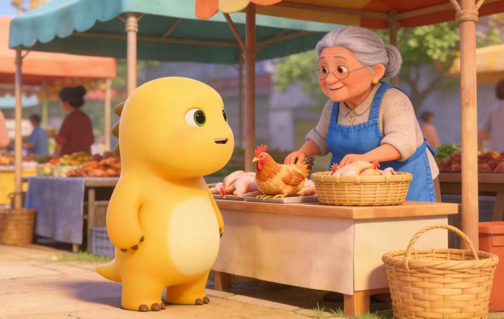

神秘的食谱——初遇
你第一次带奶龙来到小摊前，想买生鸡腿。
奶奶正对着一本破旧的笔记本发呆，没注意到你。奶龙轻轻叫了一声，她才回过神。
"哎呀，来客人了。要买鸡腿吗？可是……今天我做不出来了。这本食谱，我记不清了。"
她递给你一个泛黄的笔记本。上面画着各种鸡腿的做法，但关键步骤处都是空白和问号。
"这是我妈妈留给我的食谱，但我小时候没好好学，后来她走了……现在我想做，却想不起关键的步骤了。你能帮我回忆起来吗？如果你可以帮帮我，我就送你一些生鸡腿。"
”下一次过来，我会给你们一些线索。“
